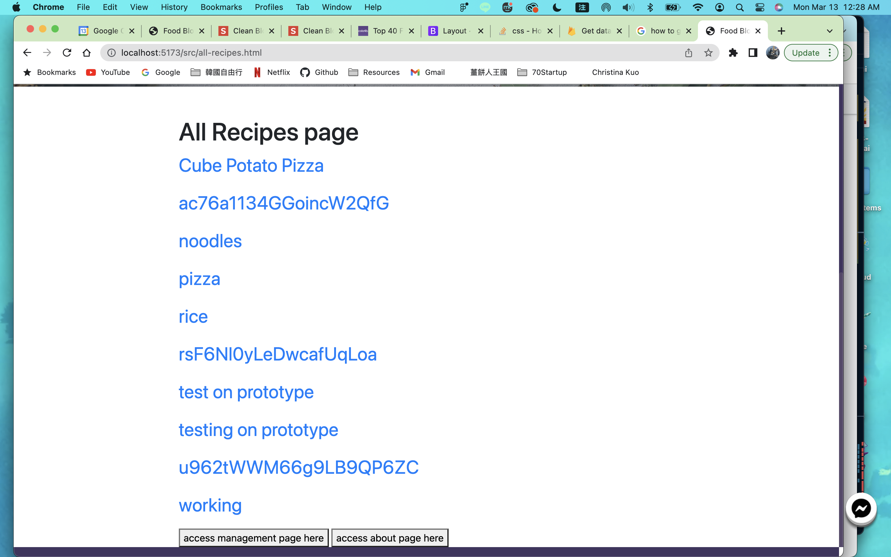
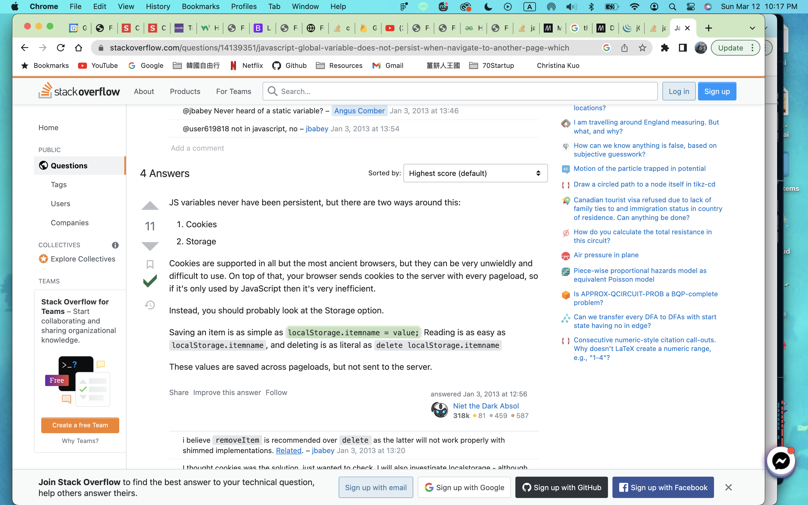
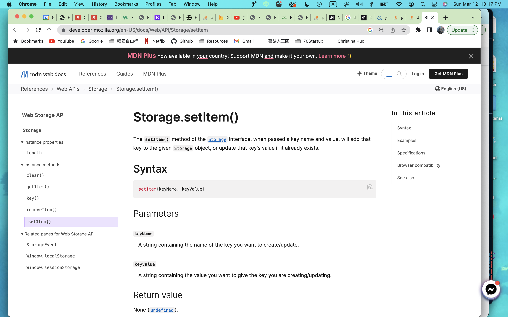
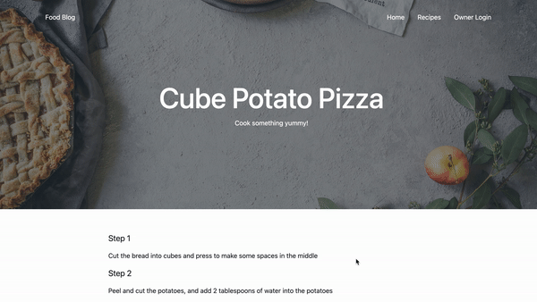
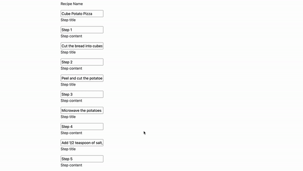
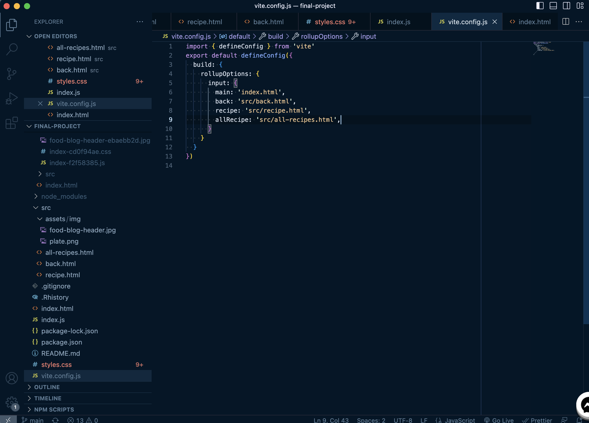

This project is a recipe platform that contains many recipes. It also allows people to upload or input their own recipes onto the website.
The main page/landing page will be my introduction. All the recipes will be shown in a table view on another page. By clicking on the individual block, the user will be taken to the individual recipe page that contains the steps to make the dish. The Upload page allows people to upload their own recipes to the website.
To start the project, I first drew out some outlines of the website, and wrote out how the data would be stored and retrieved.
I decided to use Firebase to store my data. The most difficult part of Firebase was figuring out the structure. I tried to structure the database in many ways and formats. For example, I created a collection for each recipe at first. However, it was challenging to get all the collections. So the current structure of the database is that all recipes are in one collection.
I also struggled with the data type a lot while developing the website. I was debating whether I should use arrays to pass the data or maps. After a few tries, I decided to use a map with an array for storing the recipes.
Having a better understanding of Firebase, I started to code the basic design of the website and its functionality.
A new difficulty that I ran into was that the variables were not stored after navigating to the other page. Because of this, I kept running into the issue that the variable was null. However, I solved this problem in a short time by searching online. I found that this problem could be solved by using local storage.
 After making sure I could pass the data into Firebase and retrieve the data from it, I started working on deployment. This was also one of the challenging parts of the whole process. I spent some time figuring out how vite configuration worked.
The final step of the project was working on the appearance of the website.
 The biggest issue of this project was the data type. Although Firebase accepts Map data type to be passed in, it did not allow the Map to be passed in directly.
The way to solve this problem was to convert the Map into an Object, which I was not familiar with. I spent time reading the development document from Firebase’s official website and also searching for the same issue on StackOverflow. After a long search, I finally found someone the solution and convert the Map into an Object successfully.
